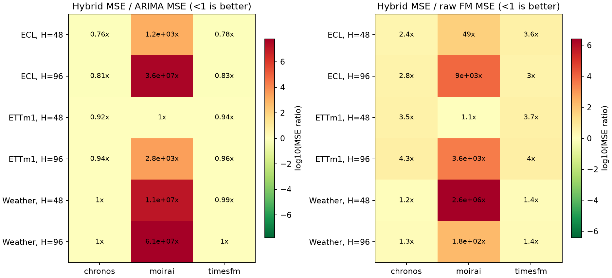
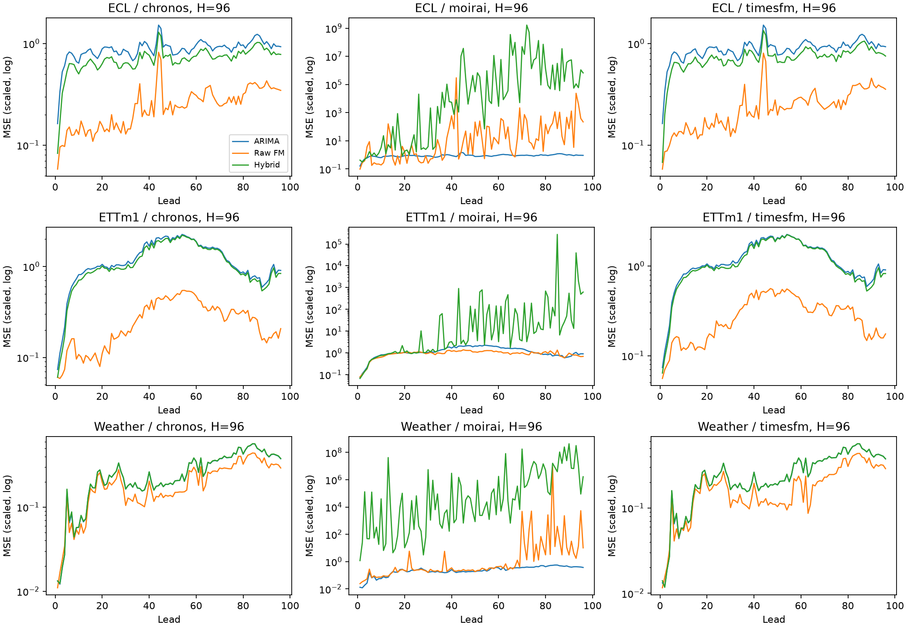
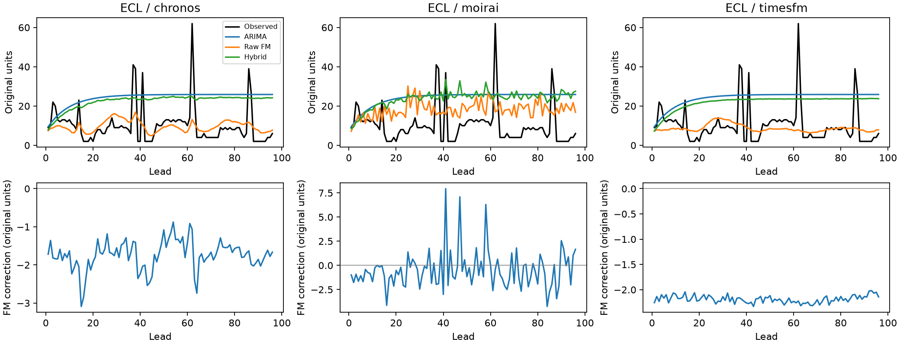
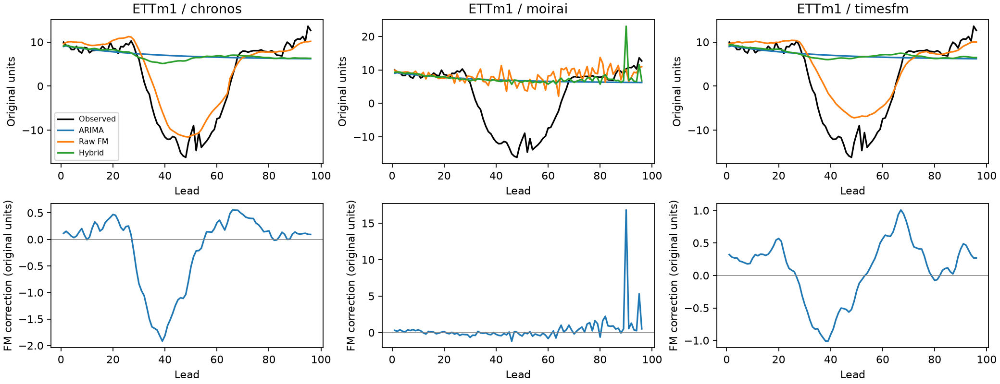
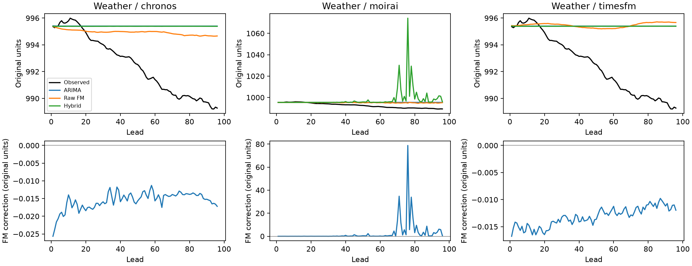

Выполнено 18 сравнений на 3 датасетах для 3 FM. Гибрид улучшил ARIMA по MSE в 10 случаях, FM на исходном ряде — в 0, обе компоненты — в 0. Это описательные результаты выбранной подвыборки, не проверка статистической значимости.
Текст отчёта · Все сравнения (CSV) · Общая таблица запусков
Общий протокол common: контекст исходного ряда 336, H=48/96, test origins: 16. Настройки ARIMA выбираются по validation MSE. Параметры фиксируются по первым 128 точкам каждого контекста, затем обновляется состояние без refit. FM получает L-W причинных одношаговых остатков. Итог = база + коррекция с весом 1. Ни критерий выбора, ни вес коррекции по test не подбирались. Точный конфиг каждого запуска сохранён в provenance/.
| dataset | steps | channels | frequency | train | validation | test | seasonality |
|---|---|---|---|---|---|---|---|
| ETTm1 | 57600 | 7 | 15min | 34560 | 11520 | 11520 | 96 |
| Weather | 52696 | 21 | 10min | 36887 | 5270 | 10539 | 144 |
| ECL | 26304 | 16 | 1h | 18412 | 2632 | 5260 | 24 |
Положительный gain (%) означает улучшение.
| dataset | horizon | fm | base_mse | fm_mse | hybrid_mse | mse_gain_vs_base_pct | mse_gain_vs_fm_pct |
|---|---|---|---|---|---|---|---|
| ECL | 48 | chronos | 0.832459 | 0.263948 | 0.634718 | 23.7538 | -140.471 |
| ECL | 48 | moirai | 0.832459 | 20.3524 | 988.4 | -118633 | -4756.42 |
| ECL | 48 | timesfm | 0.832459 | 0.180829 | 0.649209 | 22.013 | -259.019 |
| ECL | 96 | chronos | 0.889622 | 0.252772 | 0.716424 | 19.4687 | -183.427 |
| ECL | 96 | moirai | 0.889622 | 3534.53 | 3.17387e+07 | -3.56766e+09 | -897859 |
| ECL | 96 | timesfm | 0.889622 | 0.245461 | 0.736674 | 17.1924 | -200.118 |
| ETTm1 | 48 | chronos | 0.773235 | 0.204586 | 0.713966 | 7.66512 | -248.981 |
| ETTm1 | 48 | moirai | 0.77324 | 0.693653 | 0.778177 | -0.638454 | -12.1853 |
| ETTm1 | 48 | timesfm | 0.773235 | 0.197494 | 0.724823 | 6.26096 | -267.01 |
| ETTm1 | 96 | chronos | 1.23072 | 0.26936 | 1.15923 | 5.80829 | -330.366 |
| ETTm1 | 96 | moirai | 1.2307 | 0.946503 | 3388.57 | -275236 | -357909 |
| ETTm1 | 96 | timesfm | 1.23072 | 0.292943 | 1.17586 | 4.45761 | -301.394 |
| Weather | 48 | chronos | 0.122477 | 0.105679 | 0.122041 | 0.355952 | -15.4826 |
| Weather | 48 | moirai | 0.122474 | 0.500165 | 1.29078e+06 | -1.05392e+09 | -2.58071e+08 |
| Weather | 48 | timesfm | 0.122477 | 0.0894562 | 0.120823 | 1.34985 | -35.0643 |
| Weather | 96 | chronos | 0.268654 | 0.206767 | 0.26985 | -0.444898 | -30.5091 |
| Weather | 96 | moirai | 0.268656 | 92286.5 | 1.65128e+07 | -6.14647e+09 | -17793 |
| Weather | 96 | timesfm | 0.268654 | 0.187914 | 0.269123 | -0.174236 | -43.216 |
| dataset | horizon | fm | base_mae | fm_mae | hybrid_mae | base_mase | fm_mase | hybrid_mase |
|---|---|---|---|---|---|---|---|---|
| ECL | 48 | chronos | 0.702905 | 0.26075 | 0.602842 | 2.7241 | 0.992162 | 2.33981 |
| ECL | 48 | moirai | 0.702905 | 0.454822 | 1.53889 | 2.7241 | 2.08668 | 6.56323 |
| ECL | 48 | timesfm | 0.702905 | 0.242428 | 0.613775 | 2.7241 | 0.847032 | 2.36268 |
| ECL | 96 | chronos | 0.737947 | 0.282561 | 0.649401 | 2.88882 | 1.0444 | 2.52281 |
| ECL | 96 | moirai | 0.737947 | 1.35424 | 117.441 | 2.88882 | 9.1823 | 921.172 |
| ECL | 96 | timesfm | 0.737947 | 0.278758 | 0.660247 | 2.88882 | 1.02762 | 2.56386 |
| ETTm1 | 48 | chronos | 0.588188 | 0.294888 | 0.560533 | 1.40581 | 0.684919 | 1.33971 |
| ETTm1 | 48 | moirai | 0.588192 | 0.5043 | 0.579096 | 1.40581 | 1.19642 | 1.37883 |
| ETTm1 | 48 | timesfm | 0.588188 | 0.289333 | 0.565108 | 1.40581 | 0.672093 | 1.34978 |
| ETTm1 | 96 | chronos | 0.637026 | 0.322828 | 0.607877 | 1.53827 | 0.774962 | 1.468 |
| ETTm1 | 96 | moirai | 0.637024 | 0.594552 | 2.08237 | 1.53826 | 1.41662 | 4.32556 |
| ETTm1 | 96 | timesfm | 0.637026 | 0.34354 | 0.613403 | 1.53827 | 0.810829 | 1.4813 |
| Weather | 48 | chronos | 0.17029 | 0.15826 | 0.170274 | 0.41485 | 0.380493 | 0.415022 |
| Weather | 48 | moirai | 0.170277 | 0.220113 | 27.9879 | 0.414822 | 0.57888 | 125.15 |
| Weather | 48 | timesfm | 0.17029 | 0.135364 | 0.169816 | 0.41485 | 0.312755 | 0.413657 |
| Weather | 96 | chronos | 0.255101 | 0.220229 | 0.255864 | 0.628223 | 0.533253 | 0.630191 |
| Weather | 96 | moirai | 0.2551 | 2.25374 | 111.247 | 0.62821 | 5.75611 | 390.908 |
| Weather | 96 | timesfm | 0.255101 | 0.191833 | 0.255121 | 0.628223 | 0.444455 | 0.627914 |
| dataset | horizon | fm | fm_coverage_80 | hybrid_coverage_80 | fm_interval_score_80 | hybrid_interval_score_80 |
|---|---|---|---|---|---|---|
| ECL | 48 | chronos | 0.781006 | 0.316732 | 1.35844 | 4.20103 |
| ECL | 48 | moirai | 0.821615 | 0.400635 | 1.6827 | 4.14912 |
| ECL | 48 | timesfm | 0.803304 | 0.30249 | 1.27532 | 4.34666 |
| ECL | 96 | chronos | 0.748698 | 0.284342 | 1.60329 | 4.62663 |
| ECL | 96 | moirai | 0.827596 | 0.415527 | 1.83285 | 5.83834 |
| ECL | 96 | timesfm | 0.789591 | 0.286662 | 1.54555 | 4.69174 |
| ETTm1 | 48 | chronos | 0.729911 | 0.282366 | 1.36825 | 4.34315 |
| ETTm1 | 48 | moirai | 0.748326 | 0.313244 | 2.31591 | 4.27115 |
| ETTm1 | 48 | timesfm | 0.757068 | 0.290179 | 1.3492 | 4.35885 |
| ETTm1 | 96 | chronos | 0.721168 | 0.270182 | 1.62326 | 4.87939 |
| ETTm1 | 96 | moirai | 0.795294 | 0.359375 | 2.8111 | 4.66185 |
| ETTm1 | 96 | timesfm | 0.778832 | 0.306641 | 1.61917 | 4.76478 |
| Weather | 48 | chronos | 0.766307 | 0.297743 | 0.83076 | 1.41868 |
| Weather | 48 | moirai | 0.760603 | 0.341766 | 0.857656 | 1.68161 |
| Weather | 48 | timesfm | 0.770275 | 0.329365 | 0.70152 | 1.41403 |
| Weather | 96 | chronos | 0.702288 | 0.231058 | 1.2608 | 2.2864 |
| Weather | 96 | moirai | 0.732701 | 0.295232 | 1.30136 | 2.87764 |
| Weather | 96 | timesfm | 0.752542 | 0.288194 | 1.01873 | 2.21064 |
| dataset | horizon | fm | base_prediction_seconds | fm_prediction_seconds | hybrid_prediction_seconds | fm_ms_per_series_origin | hybrid_ms_per_series_origin |
|---|---|---|---|---|---|---|---|
| ECL | 48 | chronos | 2.50897 | 0.2167 | 2.64426 | 0.846486 | 10.3292 |
| ECL | 48 | moirai | 2.25835 | 6.7647 | 7.40333 | 26.4246 | 28.9193 |
| ECL | 48 | timesfm | 2.50897 | 9.30534 | 9.1254 | 36.349 | 35.6461 |
| ECL | 96 | chronos | 2.51806 | 2.18215 | 4.58146 | 8.52404 | 17.8963 |
| ECL | 96 | moirai | 2.45928 | 7.24119 | 7.99817 | 28.2859 | 31.2428 |
| ECL | 96 | timesfm | 2.51806 | 12.028 | 9.17022 | 46.9845 | 35.8212 |
| ETTm1 | 48 | chronos | 1.42201 | 0.0935801 | 1.4458 | 0.835537 | 12.9089 |
| ETTm1 | 48 | moirai | 1.24403 | 2.31413 | 2.88576 | 20.6619 | 25.7657 |
| ETTm1 | 48 | timesfm | 1.42201 | 4.07869 | 4.40638 | 36.4168 | 39.3427 |
| ETTm1 | 96 | chronos | 1.49217 | 0.923442 | 2.0827 | 8.24502 | 18.5955 |
| ETTm1 | 96 | moirai | 1.23961 | 2.52912 | 3.14617 | 22.5814 | 28.0908 |
| ETTm1 | 96 | timesfm | 1.49217 | 4.07502 | 4.36996 | 36.3841 | 39.0175 |
| Weather | 48 | chronos | 5.58175 | 0.282335 | 5.79091 | 0.840284 | 17.2348 |
| Weather | 48 | moirai | 5.06827 | 7.06719 | 9.99745 | 21.0333 | 29.7543 |
| Weather | 48 | timesfm | 5.58175 | 12.2247 | 14.3673 | 36.383 | 42.7598 |
| Weather | 96 | chronos | 5.46025 | 2.71845 | 7.3809 | 8.09062 | 21.967 |
| Weather | 96 | moirai | 4.99325 | 7.61088 | 10.506 | 22.6514 | 31.2678 |
| Weather | 96 | timesfm | 5.46025 | 12.1718 | 14.0299 | 36.2256 | 41.7558 |
| dataset | horizon | fm | origin_win_vs_base | origin_win_vs_fm |
|---|---|---|---|---|
| ECL | 48 | chronos | 1 | 0.0625 |
| ECL | 48 | moirai | 0.125 | 0.125 |
| ECL | 48 | timesfm | 1 | 0 |
| ECL | 96 | chronos | 1 | 0 |
| ECL | 96 | moirai | 0 | 0.25 |
| ECL | 96 | timesfm | 1 | 0 |
| ETTm1 | 48 | chronos | 1 | 0 |
| ETTm1 | 48 | moirai | 0.5 | 0.3125 |
| ETTm1 | 48 | timesfm | 0.9375 | 0 |
| ETTm1 | 96 | chronos | 0.9375 | 0.0625 |
| ETTm1 | 96 | moirai | 0.1875 | 0.125 |
| ETTm1 | 96 | timesfm | 0.9375 | 0.0625 |
| Weather | 48 | chronos | 0.5 | 0.4375 |
| Weather | 48 | moirai | 0 | 0.0625 |
| Weather | 48 | timesfm | 0.6875 | 0.4375 |
| Weather | 96 | chronos | 0.375 | 0.3125 |
| Weather | 96 | moirai | 0 | 0.0625 |
| Weather | 96 | timesfm | 0.625 | 0.1875 |
Prediction time включает подгонку локальной ARIMA и FM inference, но не запись Parquet. Память — RSS всего процесса, включая cached модели, не VRAM. Cold load, validation selection и inference нельзя складывать без уточнения режима; метрики затрат здесь диагностические.
Все результаты получены на CPU. Electricity ограничен фиксированными 16 каналами; origins выбраны равномерно по split, а не исчерпывают весь test. Это расширенный pilot. Каналы и соседние ошибки не являются независимыми наблюдениями; доля выигравших origins описательная, без p-value. FM используют разные point forecasts (Chronos: медиана; TimesFM: native head; Moirai: среднее samples). Интервалы гибрида условны на point базы. Для H=96 Chronos-Bolt использует rollout сверх native H=64. Moirai запускается в отдельном окружении со своим paired ARIMA baseline. Pretraining overlap не проверен. ARIMA ограничена двумя порядками и fit-prefix=128; сравнение не охватывает все ARIMA/SARIMA-настройки. Результаты общего протокола не воспроизводят таблицы FM-статей.
Инициализация ARIMA: approximate_diffuse, maxiter=100 в этих конфигах. Approximate diffuse явно задана после LU-сбоя стационарной инициализации на Weather. Численно неудачные validation-кандидаты записываются в selection.json; ошибка выбранной модели на test делает прогон неполным. Часть локальных fit может завершаться без сходимости оптимизатора: такие прогнозы сохранены, а счётчики приведены ниже. Это ограничивает надёжность ARIMA baseline и выводов о её улучшении. Счётчики относятся к выбранному порядку на validation+test, не ко всем кандидатам.
| dataset | horizon | fm | base_fits_validation_test | base_nonconverged_fits | hybrid_nonconverged_fits |
|---|---|---|---|---|---|
| ECL | 48 | chronos | 512 | 3 | 3 |
| ECL | 48 | moirai | 512 | 4 | 4 |
| ECL | 48 | timesfm | 512 | 3 | 3 |
| ECL | 96 | chronos | 512 | 2 | 2 |
| ECL | 96 | moirai | 512 | 1 | 1 |
| ECL | 96 | timesfm | 512 | 2 | 2 |
| ETTm1 | 48 | chronos | 224 | 2 | 2 |
| ETTm1 | 48 | moirai | 224 | 4 | 4 |
| ETTm1 | 48 | timesfm | 224 | 2 | 2 |
| ETTm1 | 96 | chronos | 224 | 5 | 5 |
| ETTm1 | 96 | moirai | 224 | 6 | 6 |
| ETTm1 | 96 | timesfm | 224 | 5 | 5 |
| Weather | 48 | chronos | 672 | 161 | 161 |
| Weather | 48 | moirai | 672 | 155 | 155 |
| Weather | 48 | timesfm | 672 | 161 | 161 |
| Weather | 96 | chronos | 672 | 145 | 145 |
| Weather | 96 | moirai | 672 | 138 | 138 |
| Weather | 96 | timesfm | 672 | 145 | 145 |
| dataset | horizon | expected_mse | actual_mse | status |
|---|---|---|---|---|
| ETTm1 | 48 | 0.27028 | 0.27028 | within_tolerance |
Авторский лог одного seed. Полное воспроизведение статей не заявляется.
В основной таблице Moirai использует среднее 100 samples, как задано до запуска. В отдельных прогнозах среднее значительно выходит за центральный 80% интервал и даёт крупные ошибки. Ниже отдельно пересчитаны ошибки сохранённой q0.5 без нового inference и изменения основного результата. Это post-hoc диагностика чувствительности к точечному функционалу, не выбор модели по test. Крупнейшие ошибки и их квантили сохранены в largest_errors.csv; примеры выбраны именно для диагностики выбросов.
| dataset | fm | horizon | seed | role | mean_mse | median_mse | mean_mae | median_mae | max_abs_mean_error_scaled | max_abs_median_error_scaled |
|---|---|---|---|---|---|---|---|---|---|---|
| ETTm1 | moirai | 48 | 0 | fm | 0.693653 | 0.724197 | 0.5043 | 0.505082 | 5.16879 | 5.26514 |
| ETTm1 | moirai | 48 | 0 | hybrid | 0.778177 | 0.793332 | 0.579096 | 0.582344 | 5.3182 | 4.19927 |
| ETTm1 | moirai | 96 | 0 | fm | 0.946503 | 0.929902 | 0.594552 | 0.57316 | 6.55525 | 5.2606 |
| ETTm1 | moirai | 96 | 0 | hybrid | 3388.57 | 1.19581 | 2.08237 | 0.623474 | 5531.46 | 6.37068 |
| Weather | moirai | 48 | 0 | fm | 0.500165 | 0.110681 | 0.220113 | 0.163016 | 43.7764 | 5.69539 |
| Weather | moirai | 48 | 0 | hybrid | 1.29078e+06 | 0.128892 | 27.9879 | 0.17312 | 108193 | 5.73133 |
| Weather | moirai | 96 | 0 | fm | 92286.5 | 0.224543 | 2.25374 | 0.229311 | 54495.1 | 5.6957 |
| Weather | moirai | 96 | 0 | hybrid | 1.65128e+07 | 0.282263 | 111.247 | 0.259174 | 380652 | 6.90959 |
| ECL | moirai | 48 | 0 | fm | 20.3524 | 0.312976 | 0.454822 | 0.332843 | 340.574 | 12.2087 |
| ECL | moirai | 48 | 0 | hybrid | 988.4 | 0.770328 | 1.53889 | 0.676808 | 2702.91 | 12.2233 |
| ECL | moirai | 96 | 0 | fm | 3534.53 | 0.321821 | 1.35424 | 0.34675 | 8759.32 | 12.2229 |
| ECL | moirai | 96 | 0 | hybrid | 3.17387e+07 | 0.83736 | 117.441 | 0.711189 | 651674 | 12.247 |
Крупнейшие ошибки и квантили · Диагностика CSV





Конфиги, validation selection, checkpoints, пакеты и snapshot кода сохранены в provenance/.
20261026T183514Z-f78629b8 20261026T184059Z-cd8a44b0